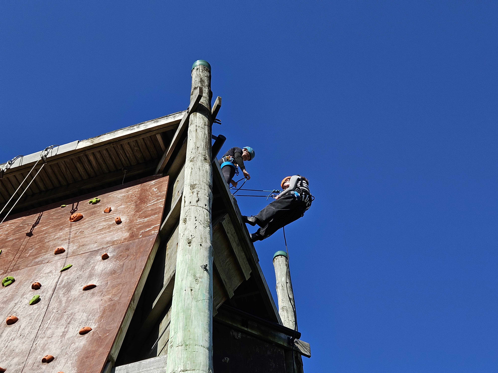

Waiheke High School Year Group Camps
Welcome to the centralised digital hub for Waiheke High School's camp programs. Select any of our four Year Group Camps from the navigation menu to explore camp goals, activity summaries, equipment packing checklists, digital SchoolApps consent forms, safety protocols, and official park links.
Live Gulf Weather & Marine Radar
Up to date local marine conditions, wind vectors, and weather radar across Hauraki Gulf / Tīkapa Moana.
Waiheke Island Marine & Environmental Overview
Real-time tides, solar/lunar cycles, live surface pressure, and atmospheric metrics via MetService & Open-Meteo API.
🌊 Waiheke Island Tides Overview
Today's Cycle| LOCATION | LOW | HIGH | LOW | HIGH |
|---|---|---|---|---|
| Matiatia Bay | 06:03 0.8m |
12:24 2.7m |
18:31 1.1m |
23:51 2.7m |
| Man O' War Bay | 06:01 0.8m |
12:19 2.7m |
18:29 1.1m |
23:47 2.7m |
* High tide heights measured in meters above chart datum.
☀️ Sun & Moon Hours
🌙 Moon Phases
⏱️ Live Surface Pressure
Waiheke Telemetry🇳🇿 National Current Extremes
Recorded SnapshotFoundational School Pillars & Culture
The four core themes guiding student growth, outdoor learning, and character development at Waiheke High School.
Our Vision
"We are the waka that guides our rangatahi on their individual journey to success."
Whakataukī
Whāia te pae tawhiti.
"Pursue your goals to the furthest horizon."
WISE Values
- Whanaungatanga
- Independence
- School Culture
- Excellence
Core values embedded across all camp environments.
The Waiheke Way
"The Waiheke Way is centred around being ready, respectful and safe."
Four-Year Camp Progression & Physical Challenge Matrix
Comparative assessment across Year 7–10 camp experiences.
📈 Scaffolded Four-Year Journey
About Waiheke High School
Established in 1986, Waiheke High School is the only island-based high school in New Zealand and caters for students from Years 7–13.
In a relatively short time, we have accomplished an enviable academic record, recognising the top overall scholar and top Māori student of New Zealand as just some of our students’ outstanding successes.
Located in the pristine environment of the Hauraki Gulf / Tīkapa Moana, Waiheke High School leverages its unique island setting to provide world-class Education Outside the Classroom (EOTC).
Key School Statistics
A long History of Junior EOTC at WHS
EOTC FrameworkFor over 40 years, the hugely successful Year 9 mountain trip—originally established and run by the legendary Mr Bob Upchurch—stood alongside other junior camps at Waiheke High School, but over the years the trips slowly disappeared until the only remaining camp was in Year 9 to Mt Ruapehu. This stood as a solitary, stand-alone outdoor adventure for WHS junior students for more than a decade. Upon returning from teaching overseas, Mr Mathew Jacomb brought a new vision to completely overhaul and scaffold the junior year group camps program into a progressive four-year journey that was focused on our own backyard. Tīkapa moana, the Hauraki Gulf. Students now have a journey of increasing difficulty from Year 7 right through to Year 10. This is an exciting opportunity for our students to build critical interpersonal skills including resilience, independance, and communication as well as a sense of kotahitanga, whanaungatanga, and kaitiakitanga. All through physical, mental and emotional challenges outside the classroom.
This program started in 2025, Mr Jacomb built the new program anchored directly in professional guidelines from Education Outdoors New Zealand (EONZ) — Revisioning School Camps. This transformed the camp structure into a place-responsive, student-centred pathway.
"Outdoor education provides opportunities for teamwork, problem-solving and resilience, while also fostering a sense of kaitiakitanga (guardianship) for Aotearoa's natural environment."
"This resource supports teaching and learning with the development of localised, place-responsive, student-centred school camp programmes... grounding taiohi voice, agency and leadership."
Mr M Jacomb
Year Group Camps Coordinator
Curriculum Links
The junior Year 7–10 camp progression serves as the foundational springboard for senior NCEA physical education, sea sports, and outdoor education pathways at Waiheke High School. By learning about safety in the outdoors, biosecurity, navigation, and leadership in junior camps, students build the confidence and skill set required to excel in senior outdoor curriculum subjects.
Year 11 Outdoor Education Course
Level 1 NCEAPrepares students for outdoor leadership, risk assessment, and technical skill development, drawing directly upon the camping, tramping, and navigation competencies developed during the Year 7–10 island expeditions.
Year 12 & 13 Sea Sports Course
Level 2 & 3 NCEAAn intensive senior program leveraging our marine backyard where students participate weekly in a wide variety of advanced outdoor and water-based pursuits including:
How We Support Whānau Participation
We strongly believe that zero financial barriers should exist when it comes to student participation in EOTC experiences.
The Spirit of Waiheke Trust
The Spirit of Waiheke Trust provides dedicated funding assistance for local Waiheke families who require financial support.
Year 7 Whakanewha Regional Park Camp
Introduces students to tent camping, teambuilding, and outdoor safety at Whakanewha Regional Park.
About Whakanewha Regional Park
Found on the south coast of Waiheke Island, near Rocky Bay, Whakanewha Regional Park is known for its mature forest, cascading stream and sweeping crescent-shaped beach cut in two by a forested headland. It is home to the only campground on the island making it popular with both local and international tourists.
At high tide the water is shallow, warm and ideal for children. Picnic spots on the foreshore are plentiful.
Whakanewha means “to shade the eyes from the setting sun”. The site became a regional park in 1994.
History
Whakanewha is steeped in Māori and European history. The numerous shell middens, pits, terraces and pā site on the headland remain from many generations of Māori occupation. Inhabitants of the pā gathered pipi, scallops and cockles from the Whakanewha foreshore.
Europeans began to use the area for trading, boat building and forestry in the 1830s. In the 1850s, Māori cultivated the flat land, supplying Auckland with fruit and vegetables.
🗺️ Whakanewha Regional Park Trail Map & Official Track Specs
Official park map showing Poukaraka Flats campground, bush tracks, and historical Pā site routes.

Official Feature Walks (PDF Specs)
Headland walk starting at Sculpture car park exploring ancient Māori terraced kūmara pits and coastal vistas.
Named after kumara storage pits visible along the route through mature native bush returning along the foreshore.
Starts at Carson's Road car park taking in Tarata Track, Central Track, and Cascades Stream waterfalls.
Full loop walk connecting Nīkau, Tarata, and Kōwhai tracks with views across Hauraki Gulf to mainland Auckland.
Auckland Council Regional Safety Codes
Water Safety Code: Be prepared, watch out for yourself and others, be aware of dangers, know your limits.
Land Safety Code: Choose right trip, understand weather, pack warm clothes/extra food, share plans, take care.
Year 7 SchoolApps Consent Form
Digital permission slips must be submitted via SchoolApps NZ prior to departure.
🎒 Student Equipment List
Camp Activities
Motuihe Island Camp
An island sanctuary camp focusing on ecosystem restoration, Mau Rākau stances, fishing, beach art, and teambuilding.
About Motuihe | Te Motu-a-Ihenga
An island paradise situated in the Hauraki Gulf, a leisurely trip of 1hr by Red Boats. Motuihe Island is now home to native New Zealand flora and fauna such as the little spotted kiwi, saddleback, kakariki, bellbirds, whiteheads, shore skinks, common gecko, duvaucel gecko and tuatara to name a few.
Motuihe Restoration is a conservation project run in partnership between Motuihe Trust and the Department of Conservation to transform Motuihe Island into an authentic natural environment of beaches, native forests, wetlands and open spaces together with rare and endangered native birds and insects.
Motuihe Project was established in 2000 by members of the community in conjunction with the DOC. It was inspired by the vision of the island’s resident concessionaire, Ronnie Harrison. A community trust was formed and a Restoration Plan devised to drive the restoration of New Zealand’s unique flora and fauna to this island. Since then thousands of native trees have been planted to regenerate the islands once thick forests.
History
Archaeological evidence so far observed and recorded indicates that Motuihe was likely settled at the time of early Polynesian settlement around the thirteenth century AD.
There are approximately 63 recorded archaeological sites on Motuihe which relate to Māori settlement including quarrying sites, crop storage pits and two pā called Te Rae o Kahu, Mangoparerua and Te Tumurae. Between 1837 and 1840 the island was sold four times, resulting from a change of Māori ownership to European. The motu was then farmed from 1843-1872, until it was purchased for a quarantine station in 1872. The island was farmed with horses, cattle, pigs, fowl and game.
During the First World War, the Motuihe Quarantine Station was repurposed as an internment camp. It was first used as a camp for ‘first class’ prisoners, women and children, while those of the ‘second class’ and destitute were sent to Somes Island in Wellington. As the war progressed ‘working class’ prisoners were also interned on Motuihe. Public access to Motuihe again became available in the summer of 1948-1949 after joint use with the Navy had been negotiated. A decision was made to return the island for use as a recreation reserve.
Video: Department of Conservation Motuihe Sanctuary Overview
Video: Department of Conservation Island Biosecurity Guidelines
📷 Year 8 Camp Highlights
Motuihe Island Experience


🗺️ Motuihe Island Trail Map & Official Track Specs
Official Department of Conservation (DOC) & Motuihe Trust trail network map and walking specifications.

Official DOC & Motuihe Trust Island Trail Map (Te Motu-a-Ihenga)
Official DOC Track Specifications
Passes 2003 plantings & ancient native canopy home to rare tieke (saddleback), pancake limestone formations, and Gulf lookout seats.
Easy mown-grass loop providing access to Ocean Beach, Snapper Bay, Calypso Bay, and Ohinerau Bay with sheltered picnic spots.
Follows southern ridgeline to secluded sandy beaches, featuring 360° Hauraki Gulf views across Wharf Bay to Rangitoto.
Sealed road passing 1860s olive groves leading up to the historic 1918 Spanish Flu cemetery at the northern tip.
DOC Environmental & Island Biosecurity Rules
Pest-Free Sanctuary: Strict prohibition on dogs, fires, dirt on shoes, unsealed food bags, or introduced pests.
Year 8 SchoolApps Consent Form
Ferry boarding consent and biosecurity commitments must be confirmed on SchoolApps NZ.
🎒 Student Equipment List
Camp Activities
Year 9 Motutapu Outdoor Education Centre (MOEC)
High adventure, ropes courses, cliff abseiling, WWII underground military bunker exploration, and coastal team challenges.
About Motutapu
Motutapu is a taonga with many historical and natural places. It was declared pest-free in 2011 after a four year eradication programme which has created a safe haven for our precious flora and fauna in New Zealand — both land, sky and sea. Since 1993, the collective effort within Motutapu Restoration Trust has restored the island from stripped pasture due to farming, to incredible forest and bush regeneration for all native species to thrive. Motutapu Island adjoins Rangitoto which is home to the world’s largest pohutukawa forest. Volunteers have planted 450,000 native trees. There are four different habitat types that support our most loved wildlife and some of NZ’s rarest, flightless birds. Birds commonly found include Coromandel Brown Kiwi thanks to Kiwis for kiwi and takahē thanks to the Takahē Recovery Programme. Pāteke/brown teal are the rarest waterfowl on the mainland but also call Motutapu Home, as well as five native lizard species, freshwater crayfish and NZ’s native eel. The 100th brown kiwi was recently released on Motutapu Island as part of the programme Operation Nest Egg run by Kiwis for Kiwi. These kiwi are placed in a burrow in native forest planted by Motutapu Restoration Trust volunteers.
History
Motutapu Island has a rich history. It was first considered a sacred place by local iwi when Maori were living there even before Rangitoto emerged from the sea 600 years ago. After Motutapu was passed onto European ownership, farming began on the island in 1840 before it was used as Military Base in WWII. Today, it’s a scenic reserve for people to enjoy and look after. With 178 million years of history, Motutapu is considered one of the earliest places that was inhabited. It has more than 300 Maori pā, kainga, kumara storage pits, former gardens and archeological sites, as well as evidence that settlers witnessed Rangitoto Island erupting 600 years ago. Archeologists have found the footprints of people and dogs preserved in solidified ash layers after Maori returned to Motutapu between eruptions. Ngati Tai is the principal iwi with features of Arawa and Tainui traditions. In 1840 Europeans claimed ownership of Motutapu Island, and homesteads were established at Emu Bay and Home Bay. Tall Norfolk pines and other exotic trees were planted after deforestation following the eruption, and extensive farming began. The last farmhouse was a villa built in 1901 for the Reid Family, which still remains preserved on the island as a reminder of the homesteads once seen on the shores. Deer, wallabies, and other exotic animals were introduced to Motutapu Island as a visitor attraction in the 1860s and by the early 20th century it had become a popular visitor destination (hosting Victorian picnic parties of over 10,000 people).
Video: Department of Conservation Island Biosecurity Guidelines
Video: Motutapu Outdoor Education Centre (MOEC) Overview
📷 Year 9 Camp Highlights
Motutapu MOEC Experience




Year 9 SchoolApps Consent Form
High-ropes risk waivers and medical consent forms must be completed on SchoolApps NZ.
🎒 Student Equipment List
Camp Activities
Year 10 Aotea Great Barrier Island Expedition
The flagship junior expedition traversing Mt Hobson summit (Hirakimata 621m), Windy Canyon ravines, and Kaitoke Hot Springs.
About Aotea | Great Barrier Island
Great Barrier Island is the largest and most seaward of the Hauraki Gulf islands in the Auckland region. For thousands of years, it has sheltered Auckland's harbour from the relentless swells of the Pacific Ocean, creating a boating paradise.
The 90 kilometre journey from Auckland city takes about 4.5 hours by ferry or you can catch a 30-minute flight with Barrier Air to the remote location.
The eastern shore of Great Barrier Island faces the ocean with high cliffs and long white surf beaches; the western side offers deep sheltered harbours and calm sandy bays.
More than 60 percent of Great barrier Island's 285 square kilometres is public land administered by the Department of Conservation. The native forest is laced with beautiful walking tracks, which lead to secluded natural hot springs and a historic Kauri dam. These wilderness areas, foreshores, and estuaries are home to several unique plant and bird species. Rising 627 metres above the sea, Hirakimata (Mount Hobson) beckons the hiker with the promise of incredible 360-degree views. The island is entirely off-grid relying on renewable solar power and collection of freshwater. With a population of around 1000 people, the locals are sure to welcome you to their vibrant, self-sufficient community.
History
Aotea/Great Barrier Island has a rich history. It dates back to the very first settlement of New Zealand by the East Polynesian ancestors of today’s Maori population Ngāti Rehua Ngātiwai ki Aotea, who trace their ancestry over many centuries to the original inhabitants. Throughout the Polynesian migratory age, many ancestral waka landed on the shores of Aotea, guided by the constellations. The first Polynesian wayfinder, Kupe, landed on our shores, calling it Okupe. Over the years this has changed to Okupu, still a name for one of our settlements now.
Captain James Cook charted the New Zealand Coast as part of his 1768-1771 expedition to observe the transit of Venus across the Sun. He named the island Great Barrier in 1769 for the shelter and protection it provides to the Hauraki Gulf. From the 1840s, the Island’s natural resources attracted European settlement. A number of boom and bust industries exploited the Island’s mature kauri forests, minerals (copper, silver, gold) and migrating whales.
Descendants of the early European settler families still live on Great Barrier Island. Roads are named after the Blackwells, Medlands, Sandersons and Grays, and some families have been continuously on the island for more than 150 years. Old homesteads can still be seen with Ollies Cottage, built in the 1860s, still standing at Puriri Bay and homesteads at Harataonga, Tryphena, and Port Fitzroy reminding visitors of colonial times. Tryphena School was built in 1884 and is now used as a community service building.
Video: Department of Conservation Aotea Wilderness Guide
Video: Aerial Overview of Great Barrier Island Sanctuary
📷 Year 10 Expedition Highlights
Aotea / Great Barrier Island Experience


Year 10 SchoolApps Consent Form
Expedition medical clearances and ferry approvals must be submitted on SchoolApps NZ.
🎒 Student Equipment List
Camp Activities
Interactive Student Equipment & Biosecurity Tools
Calculate estimated pack weight dynamically or generate your required Department of Conservation (DOC) pest-free clearance token.
Interactive Gear Mass Audit
Category Weight Distribution
DOC Biosecurity Digital Pass
🌿✅ DOC BIOSECURITY PASSED
PASS-DOC-2026-9042